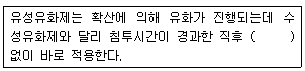
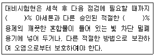
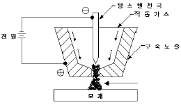

침투비파괴검사기사(구) (2009-08-30 기출문제)
1과목: 침투탐상시험원리
1. 다음 중 시험체의 표면장력에 관한 식으로 옳은 것은? (단, Γ: 시험체의 표면장력, X: 침투액의 표면장력 Y: 시험체와 침투액 계면의 표면 장력, θ: 접촉각이다.)
- Γ = Y + Xㆍcosθ
- Γ = X + Yㆍcosθ
- Γ = Y - Xㆍcosθ
- Γ = X - Yㆍcosθ
(정답률: 알수없음)

2. 다음 중 단조품의 표면에서 침투탐상시험으로 발견하기 어려운 결함은?
- 겹침(Lap)
- 백점(Flake)
- 터짐(burst)
- 루트균열(Root crack)
(정답률: 알수없음)
3. 다음 중 일반적으로 사용 중인 현상제에 필요한 특성과 거리가 먼 요소는?
- 침투액의 흡출 능력이 좋아야 한다.
- 배경 색채와의 대조 능력이 좋아야 한다.
- 자외선에 의한 형광의 발산이 좋아야 한다.
- 시험 표면에 대한 부착능력이 좋아야 한다.
(정답률: 알수없음)
4. 후유화성 침투액을 세척처리할 때의 설명으로 옳지 않은 것은?
- 분무법으로 침투액을 제거한다.
- 물에 적신 헝겊을 사용해서 침투액을 제거한다.
- 세척을 시작한 후 중단하지 않고 단시간에 신속하게 하는 게 좋다.
- 형광 침투액의 경우 자외선을 조사시켜 세척 정도를 확인하고 제거한다.
(정답률: 알수없음)
5. 다음 중 후유화성 형광침투탐상시험의 특성에 대한 설명으로 옳은 것은?
- 침투액에 유화제가 함유되어 있으므로 결함 속에 침투하는 침투시간이 길어진다.
- 수분이 혼입되거나 온도에 의한 침투액의 성능 저하가 다른 침투탐상시험에 비하여 적다.
- 재검사를 하거나 여러 차례 검사를 하면 다른 침투탐상시험에 비하여 재현성이 떨어진다.
- 유화 과정이 별도로 분리되므로 다른 침투탐상시험에 비하여 복잡한 형태의 시험체에 적용이 용이하다.
(정답률: 알수없음)
6. 다음 중 끼워 맞춤, 키홈, 리벳이음 등 조립된 부품 사이 틈새에 의해 발생한 침투탐상시험의 의사지시모양으로 볼수 없는 것은?
- 외부에 의한 오염지시
- 전처리가 부족한 지시
- 균열에 의한 불연속 지시
- 제거처리가 부족한 지시
(정답률: 알수없음)
7. 할로겐 누설시험에서 가열양극 할로겐법의 장점을 설명한 것으로 틀린 것은?
- 사용이 간단하고 능률적이다.
- 할로겐 추적가스에만 응답한다.
- 기름에 막혀 있는 누설도 검출할 수 있다.
- 진공상태에서도 일반적인 검출기를 이용하여 시험할 수 있다.
(정답률: 알수없음)
8. 방사선투과시험에서 X선 발생장치의 표적(타게트)이 가져야 할 특성과 거리가 먼 것은?
- 용융점이 높아야 한다.
- 원자번호가 커야 한다.
- 열전도성이 낮아야 한다.
- X선 발생효율이 높아야 한다.
(정답률: 알수없음)
9. 다음 중 초음파 탐상시험으로 발견하기 가장 쉬운 결함은?
- 구형으로 된 공동
- 금속 내부에 개지된 슬래그
- 초음파의 진행 방향과 평행한 결함
- 초음파의 진행 방향과 직각으로 확대된 결함
(정답률: 알수없음)
10. 가시광선이나 X선 또는 γ선에 노출되면 훌륭한 전기도체가 되는 원리를 이용하여 셀레늄(selenium)판에 시험체의 상을 기록하여 건식현상 처리하는 방사선투과시험은?
- 자동(Auto) 방사선투과시험
- 제로(Zero) 방사선투과시험
- 입체(Stereo) 방사선투과시험
- 실시간(Realtime) 방사선투과시험
(정답률: 알수없음)
11. 물체가 변형할 때 그 물체의 표면에 부착시켜 놓은 소자의 변형에 의하여 전기적인 변화를 측정하므로 제품이나 부품의 전체적인 모니터링이 가능한 특수 비파괴검사법은?
- 전위차시험
- 스트레인측정시험
- 전자초음파공명시험
- 기체 방사성동위원소시험
(정답률: 알수없음)
12. 철강재의 용접으로 발생되는 냉간균열을 찾아내기 위한 비파괴검사 시기로 가장 적합한 것은?
- 용접 후 즉시
- 용접 후 약 3시간 후
- 용접 후 약 12시간 후
- 용접 후 약 24시간 후
(정답률: 알수없음)
13. 다른 비파괴검사와 비교했을 때 와전류탐상시험의 장점에 대한 설명으로 틀린 것은?
- 결함 형상의 판별이 뛰어나다.
- 전도체의 표면결함에 대한 감도가 높다.
- 고속으로 자동화된 전수검사가 가능하다.
- 시험체와 코일이 비접촉으로 검사가 가능하다.
(정답률: 알수없음)
14. 와전류탐상시험에서 비전도성 막아니 비자성 금속의 막두께를 측정할 수 있는 것은 어떤 형상을 이용한 것인가?
- 표피효과(Skin effect)
- 산란효과(Scatter effect)
- 감쇠효과(Attenuation effect)
- 리프트-오프효과(Lift-off effect)
(정답률: 알수없음)
15. 다른 침투탐상시험과 비교하여 수세성 형광침투탐상시험의 단점은?
- 거친 시험면에 적용할 수 없다.
- 얕은 표면 결함을 검출하는데 신뢰성이 떨어진다.
- 다량의 소형 부품을 탐상하는데 시간이 많이 걸린다.
- 다양한 크기 및 형상의 시험체에 적용하는데 어렵다.
(정답률: 알수없음)
16. 누설시험과 관련하여 부피가 일정한 밀폐된 탱크내 이상기체 온도가 0℃, 압력이 40psi 일 때 다른 조건의 변화없이 이상기체의 온도만 50℃ 로 상승할 때 탱크내 기체의 압력은 약 몇 psi 인가?
- 40.1
- 42.5
- 45.2
- 47.3
(정답률: 알수없음)
17. 다름 중 비파괴검사의 자기탐상시험과 관련된 용어로 옳은 것은?
- 투자율
- DAC 곡선
- 스넬의 법칙
- 음향 임피던스
(정답률: 알수없음)
18. 자분탐상시험에서 히스테리스스곡선의 종축과 횡축이 나타내는 것은?
- 자속밀도, 투자율
- 자계의 세기, 투자율
- 자속밀도, 자계의 세기
- 자화의 세기, 자계의 세기
(정답률: 알수없음)
19. 다음 중 침투탐상시험이 적합한지를 선택하는 조건과 거리가 먼 것은?
- 시험체의 재질
- 시험체의 형상
- 시험체의 표면 상태
- 시험체의 제작 공차
(정답률: 알수없음)
20. 압연 강판에 존재하는 라미네이션(lamination)을 검출하기 위한 가장 효과적인 비파괴검사법은?
- 방사선투과시험
- 중성자투과시험
- 와전류탐상시험
- 초음파탐상시험
(정답률: 알수없음)
2과목: 침투탐상검사
21. 다음 중 침투제나 현상제의 잔류물을 제거해 주는 후처리 과정이 필수적으로 요구되는 경우로 볼 수 없는 것은?
- 탐상 결과를 판정하여 폐기되는 경우
- 현상제가 흡습성이 강하여 부식의 우려가 있는 경우
- 후속 공정으로 시험체를 가공할 때 지장을 줄 우려가 있는 경우
- 보수하여 사용할 때 시험체에 남아 있는 침투액이 사용에 지장을 줄 우려가 있는 경우
(정답률: 알수없음)
22. 다음 침투탐상검사 공정 중 배액처리 시설이 필요한 처리과정으로만 조합된 것은?
- 전처리, 침투처리
- 세척처리, 건조처리
- 건조처리, 건식현상처리
- 침투처리, 습식현상처리
(정답률: 알수없음)
23. 유화제에 대한 다음 설명 중 ( )안에 알맞은 내용은?

- 건조
- 현상
- 유화
- 예비세척
(정답률: 알수없음)
24. 침투탐상검사에 사용되는 현상법의 분류로 틀린 것은?
- 습식현상법
- 건식현상법
- 속건식현상법
- 후유화현상법
(정답률: 알수없음)
25. 세척처리 후 세척액이 표면에 남아있는 상태에서 현상처리를 수행하였을 때 나타날 수 있는 현상으로 옳은 것은?
- 콘트라스트가 증가된다.
- 결함지시가 크게 나타난다.
- 결함지시 및 배경의 선명도를 감소시킨다.
- 현상제의 점착력을 높여 결함지시를 더 선명하게 한다.
(정답률: 알수없음)
26. 다음 중 유리제품이나 도자기 등의 전기 절연물에 나타나는 아주 미세한 균열을 검출하는데 가장 효과적인 침투탐상검사법은?
- 수세성 형광침투탐상검사
- 후유화성 형광침투탐상검사
- 하전입자 흡착 침투탐상검사
- 용제제거성 염색침투탐상검사
(정답률: 알수없음)
27. 티타튬의 침투탐상검사에서 탐상제의 구성 성분 중 규제 대상인 것은?
- 유화제와 유지류
- 형광침투제 함유량
- 탄소함유량과 유지류
- 염소와 불소 함유량
(정답률: 알수없음)
28. 침투탐상검사의 관찰 및 판정에 대한 설명으로 잘못된 것은?
- 습식현상제를 적용한 경우의 관찰은 현상제가 완전히 건조 되었을 때 시작한다.
- 현상제가 너무 두껍게 적용되었을 때에는 현상제를 제거하고 그 위에 다시 현상제를 적용한다.
- 확실한 판정을 위해 시험 부위를 깨끗하게 닦아낸 후 밝은 조명하에 확대경을 사용, 육안검사로 확인한다.
- 긁힘, 과잉침투제 등으로 인한 의사모양 유무는 일차 판독자의 경험에 의해 분류하고, 적절한 조명하에서 다시 관찰한다.
(정답률: 알수없음)
29. 다음 중 후유화성 침투액을 사용하는 탐상시험에서 유화제에 필요한 성능으로 틀린 것은?
- 침투성이 높아야 한다.
- 침투액과 서로 잘 녹아야 한다.
- 유화 및 세척성이 좋아야 한다.
- 침투액의 혼입에 의한 성능저하가 적어야 한다.
(정답률: 알수없음)
30. 침투탐상검사에서 침투속도를 증가시키고 침투능을 향상시키고자 할 때의 보조수단으로 합리적이지 않은 경우는? (단, 누설시험의 경우는 제외한다.)
- 가압하에서 탐상검사
- 감압하에서 탐상검사
- 시험체를 승온하여 탐상검사
- 시험체에 진동을 주어 탐상검사
(정답률: 알수없음)
31. 다음 중 형광침투액에 자외선등의 빛이 닿아 발생하는 가시광선의 파장(nm)으로 옳은 것은?
- 420
- 500
- 550
- 780
(정답률: 알수없음)
32. 침투탐상검사에서 유화시간은 조건에 따라서 달라질 수 있으므로 대비시험편을 이용해서 실험적으로 구하는 것이 바람직하다. 다음 중 유화시간을 달리 할 수 있는 인자와 거리가 먼 것은?
- 시험체의 크기
- 예상되는 결함의 종류
- 유화제 및 침투액의 종류
- 온도 및 시험표면의 거칠기
(정답률: 알수없음)
33. 다음 중 침투탐상검사로 검출하기 어려운 불연속은?
- 단조 겹침
- 크레이터 균열
- 이음매(Seams)
- 비금속 개재물 혼입
(정답률: 알수없음)
34. 다음 중 침투탐상검사에서 지시를 결함지시, 의사지시, 무관련지시로 나눌 때 전형적으로 나타나는 무관련지시는?
- 비자성체의 의한 지시
- 갈라짐에 의한 다중 지시
- 외부로부터의 오염에 의한 지시
- 부품의 형태 및 구조에 의해 나타나는 지시
(정답률: 알수없음)
35. 침투탐상시험용 대비시험편에 대한 설명으로 옳은 것은?
- 탐상조작의 적합여부를 점검하기 위하여 사용된다.
- 탐상제의 구입시 성능을 비교하기 위하여 사용된다.
- 사용 중인 탐상상제의 성능을 점검하기 위하여 사용된다.
- 탐상할 수 있는 시험체인지를 조사하기 위하여 사용된다.
(정답률: 알수없음)
36. 다음 중 침투탐상검사에서 침투에 영향을 미치는 요인이 가장 작은 인자는?
- 대기압
- 결함의 폭
- 침투액의 종류
- 탐상면의 표면 거칠기
(정답률: 알수없음)
37. 복잡한 형상의 Key 홈이나 나사부를 탐상하기에 가장 적합한 침투탐상 방법은?
- 수세성 형광침투탐상검사
- 후유화성 형광침투탐상검사
- 용제제거성 형광침투탐상검사
- 용제저거성 염색침투탐상검사
(정답률: 알수없음)
38. 다음 중 용저부에 침투탐상검사를 하기 위하여 용제에 의한 전처리를 하는 과정의 설명으로 틀린 것은?
- 고형물에 의한 오염이 있는지 없는지를 확인한다.
- 표면의 스패터, 스케일 등을 깨끗이 제거한다.
- 검사면에 세척제의 노즐을 멀리하여 약하게 뿌린다.
- 분사 세척 후 세척제가 남아있는 상태에서 마른 깨끗한 천 또는 종이로 세정제를 묻혀 닦아낸다.
(정답률: 알수없음)
39. 자외선등의 유효 수명이란 일반적으로 초기 광량의 약 몇 % 만큼 감소되었을 때를 말하는가?
- 5%
- 25%
- 50%
- 75%
(정답률: 알수없음)
40. 침투탐상검사에서 침투액이 금속표면으로 번져 적실 수 있게 적심성을 좋게 하기 위한 것으로 옳은 것은?
- 점성이 큰 것을 사용한다.
- 온도를 낮추어 사용한다.
- 접촉각이 작은 것을 사용한다.
- 표면장력이 큰 것을 사용한다.
(정답률: 알수없음)
3과목: 침투탐상관련규격
41. 침투탐상 시험방법 및 침투지시모양의 분류(KS B 0816)에 따른 탐상 결과의 관찰에 대한 설명으로 잘못된 것은?
- 지시모양의 관찰은 현상제 적용 후 7~60분 사이에 하는 것이 바람직하다.
- 형광침투액을 사용한 경우 관찰하기 전에 1분 이상 어두운 곳에 눈을 적응시킨다.
- 형광침투액을 사용한 경우 시험체 표면에서 800μW/cm2 이상의 자외선을 비추면서 관찰한다.
- 염색침투액을 사용한 경우 시험면의 밝기가 20lx 이하 인 자연광 아래에서 관찰하는 것이 바람직하다.
(정답률: 알수없음)
42. 보일러 및 압력용기에 대한 침투탐상검사(ASME Sec. V. Art. 6)의 판독에 대한 설명으로 틀린 것은?
- 형광침투제를 사용한 경우 자외선등을 사용하여야 한다.
- 염색침투제를 사용한 경우 자외선등을 사용하여야 한다.
- 최종 판독은 건식현상제의 적용 직후 7~60분 이내에 실시한다.
- 최종 판독은 습식현상제의 피막이 건조된 직후 7~60분 이내에 실시한다.
(정답률: 알수없음)
43. 보일러 및 압력용기에 대한 표준침투탐상검사(ASME Sec. V. Art. 24 SE-165)에서 친수성 유화의 유화전 행굼관리에 대한 설명으로 옳은 것은?
- 물의 행굼 온도는 15~52℃ 범위 내로 관리한다.
- 분사 행굼의 수압은 250~375kPa 의 범위로 한다.
- 세척시간은 시험체 또는 재료 규격에서 정한 시간을 따른다.
- 유화전 행금시간은 시험체에 침투제가 균일하게 잔류하도록 하기 위해 최대 시간으로 한다.
(정답률: 알수없음)
44. 보일러 및 압력용기에 대한 침투탐상검사(ASME Sec. V. Art. 6)에서 규정한 현상에 대한 설명으로 옳은 것은?
- 염색침투제를 사용하는 경우는 건식 현상제만을 사용한다.
- 염색침투제를 사용하는 경우는 습식 현상제만을 사용한다.
- 형광침투제를 사용하는 경우는 습식 현상제만을 사용한다.
- 형광침투제를 사용하는 경우는 건식 현상제만을 사용한다.
(정답률: 알수없음)
45. 보일러 및 압력용기에 대한 표준침투탐상검사(ASME Sec. V. Art. 24 SE-165)에 대한 설명으로 틀린 것은?
- 염색 침투제의 온도 범위는 10~52℃ 이다.
- 형광 침투제의 온도 범위는 10~38℃ 이다.
- 허용된 최대 현상시간은 수성 현상제의 경우 4시간이다.
- 허용된 최대 현상시간은 비수성 현상제의 경우 1시간이다.
(정답률: 알수없음)
46. 침투탐상 시험방법 및 침투지시모양의 분류(KS B 0816)에서 이원성 염색침투액을 사용할 때의 표기방법으로 옳은 것은?
- V
- F
- DV
- DF
(정답률: 알수없음)
47. 항공 우주용 기기의 침투탐상 검사방법(KS W 0914)에 따라 시험체를 건조로에 넣어 건조시킬 때 건조로의 최대 허용온도로 옳은 것은?
- 50℃
- 70℃
- 90℃
- 110℃
(정답률: 알수없음)
48. 보일러 및 압력용기에 대한 침투탐상검사(ASME Sec. V. Art. 6)에 규정한 탐상시험의 필수 변수가 아닌 것은?
- 시험 후처리 기법
- 침투제 적용 방법
- 침투제 유지시간의 감소
- 표면의 과잉 침투제 제거 방법
(정답률: 알수없음)
49. 침투탐상 시험방법 및 침투지시모양의 분류(KS B 0816)에 의한 결함의 분류 중 독립 결함에 해당되지 않는 것은?
- 갈라짐
- 선상 결함
- 분산 결함
- 원형상 결함
(정답률: 알수없음)
50. 보일러 및 압력용기에 대한 침투탐상검사(ASME Sec. V. Art. 24 SE-165)로 탐상검사를 수행할 때 1종 C방법이면 어떤 것인가?
- 수세성 형광침투탐상시험
- 수세성 염색침투탐상시험
- 후유화성 염색침투탐상시험
- 용제제거성 형광침투탐상시험
(정답률: 알수없음)
51. 비파괴검사 - 침투탐상검사 - 일반 원리(KS B ISO 3452)에 규정된 과잉 침투액 제거제에 해당되지 않는 것은?
- 물
- 액상의 용제
- 물 분말 현탁액
- 물베이스 유화제
(정답률: 알수없음)
52. 침투탐상 시험방법 및 침투지시모양의 분류(KS B 0816)에서 세척처리 및 제거처리에 대한 설명으로 틀린 것은?
- 세척처리의 수온으로는 특별한 규정이 없을 때 15~50℃의 범위로 한다.
- 스프레이 노즐을 사용하여 세척시에는 특별한 규정이 없는 한 275kPa 이하로 한다.
- 형광침투액을 사용한 시험에서 세척처리는 자외선을 비추어 처리의 정도를 확인하면서 한다.
- 제거처리시 시험체의 흠 곳에 침투되어 있는 침투액을 유출시키는 과도한 처리는 안 된다.
(정답률: 알수없음)
53. 항공 우주용 기기의 침투탐상 검사방법(KS W 0914)에서 건식 분말(종류 a) 및 수용성(종류 b)의 현상제와 사용해서는 안되는 침투액은?
- 수세성 형광침투액
- 수세성 염색침투액
- 후유화성 형광침투액
- 용제제거성 형광침투액
(정답률: 알수없음)
54. 비파괴검사 - 침투탐상검사 - 일반 원리(KS B ISO 3452)의 대비시험편에 대한 다음 설명 중 ( )안에 알맞은 숫자를 선서대로 나열한 것은?

- 20, 40
- 30, 60
- 40, 60
- 50, 50
(정답률: 알수없음)
55. 보일러 및 압력용기에 대한 침투탐상검사(ASME Sec. V. Art. 6 App. II)에서 니켈합금을 시험할 때 사용되는 탐상제에 함유된 양을 규제하는 원소는?
- 황
- 질소
- 불소
- 염소
(정답률: 알수없음)
56. 운영체제를 제어 프로그램과 서비스 프로그램으로 분류할 때 다음 중 제어 프로그램에 해당하지 않는 것은?
- 감시 프로그램
- 자료관리 프로그램
- 작업관리 프로그램
- 링키지에디터 프로그램
(정답률: 알수없음)
57. 호스트의 사용자가 자신의 호스트나 다른 호스트의 사용자에게 네트워크를 통하여 메시지를 교환하는 방법으로 다른 사용자에게서 온 메시지를 확인하고 자신의 디렉토리에 저장할 수도 있고, 다른 사용자에게 메시지를 보낼 수도 있다. 이 기능에 대한 설명으로 옳은 것은?
- 이 서비스를 사용하기 위해서는 SMTP라는 표준 통신 규약을 따라야 한다.
- 이 서비스를 FTP서비스라고 한다.
- 이 서비스를 dlydd하기 위해서는 IRC(Internet Relay Chat) 서비스가 제공되어야 가능하다.
- 이 서비스는 LAN에서만 제공된다.
(정답률: 알수없음)
58. 다음 중 법원의 판결문과 같은 많은 부피의 자료를 보관시킬 수 있도록 하는 장치는?
- BPI
- CRT
- COM
- LPM
(정답률: 알수없음)
59. 숫자로 된 IP 주소를 도메인 이름으로 바꾸어 사용하는 체계를 나타내는 것은?
- 라우팅
- DNS
- WAIS
- IRC
(정답률: 알수없음)
60. 다음 중 컴퓨터에 다른 프로그램을 변형시켜 컴퓨터의 정상 작동을 못하게 하는 프로그램은?
- 컴퓨터 바이러스
- 시스템 오류
- 컴퓨터 버그
- 컴퓨터 디버깅
(정답률: 알수없음)
4과목: 금속재료학
61. 다음 중 Al 합금에 대한 설명으로 틀린 것은?
- Al-Cu-Si 계 합금을 라우탈(Lautal)이라 한다.
- Al-Si 계 합금 중 공정점 부근 조성의 것을 실루민(Silumin)이라 한다.
- 라우탈(Lautal)은 Si 를 첨가하여 주조성을 개선하고, Cu를 첨가하여 피삭성을 향상시킨 합금이다.
- 실루민(Silumin)은 Al 에 대한 Si 의 용해도가 높아 열처리 효과가 우수하다.
(정답률: 알수없음)
62. Hastelloy B - 2 합금에 대한 설명 중 틀린 것은?
- 염산에 대한 내식성이 강하다.
- 비자성, 고강도, 저팽창률, 고온에서 낮은 증기압을 나타낸다.
- 용접 열에 의해서는 입계 부근에 부식이 일어나지 않는다.
- Fe 2.0%이하, C 0.025%이하, Si 0.10% 이하로 줄이면 용접한 상태로 사용할 수 있다.
(정답률: 알수없음)
63. 다음 중 Ti 및 Ti 합금에 대한 설명으로 틀린 것은?
- 육방정 금속으로 소성변형에 대하여 제약이 많다.
- 비중이 약 8.54 정도이며, 융점은 약 670℃ 이다.
- 기계적 성질은 300℃ 온도구역에서 강도의 저하가 현저하게 나타난다.
- Ti 중에 불순물로 O, N, C 등은 Ti 결정구조의 격자점 사이에 들어가는 침입형 불순물이다.
(정답률: 알수없음)
64. 0.5%C를 함유한 강이 상온에서 펄라이트 중의 페라이트양과 시멘타이트의 양은 각각 약 얼마인가? (단, α 탄소 고용량은 무시하며, 공석점의 탄소량은 0.80% 이다)
- 페라이트 7.5%, 시멘타이트 55%
- 페라이트 55%, 시멘타이트 7.5%
- 페라이트 37.5%, 시멘타이트 62.5%
- 페라이트 62.5%, 시멘타이트 37.5%
(정답률: 알수없음)
65. 다음 중 강인강에 대한 설명으로 틀린 것은?
- 강인강은 탄소강에 Ni, Cr, Mo, W, V, Ti, Zr 등을 첨가한 강이다.
- 뜨임에 의해 인성이 증가되는 합금강은 0.25%~0.50%C 강에 Ni, Cr, Mo을 첨가한 것이다.
- Ni-Cr-Mo 강에서 Mo은 담금질 질량 효과를 증가시키며 뜨임취성을 촉진시킨다.
- 흑연강은 강 중의 탄소를 흑연상태로 만들어 절삭성과 윤활성을 개선한 것이다.
(정답률: 알수없음)
66. 철강의 5대 구성원소 중 철(Fe)과 결함하여 고온취성을 일으키는 원소는?
- S
- P
- Mn
- Si
(정답률: 알수없음)
67. 다음 중 Fe-C 평형상태도에 대한 설명으로 틀린 것은?
- α 고용체 + Fe3C 를 펄라이트라 한다.
- 고정조직은 레데뷰라이트라 한다.
- A2 변태를 Fe3C의 자기변태점이라 하며, 약 768℃이다
- A3 변태점에서의 반응은 γ-Fe⇔α-Fr 이고, 온도는 약 910℃ 이다.
(정답률: 알수없음)
68. 강의 표면강화 열처리에 대한 설명으로 틀린 것은?
- 세러다이징(Sherardizing) 금속침투법은 철강표면에 아연을 침투시키는 방법이다.
- 고체침탄법은 강을 침탄제 속에 넣어 고온가열을 하여 C를 필요로 한 깊이까지 침투시키는 방법이다.
- 가스침탄질화는 침탄가스에 10% 이상의 프레온 가스를 섞어 200~300℃로 4-6시간 가열한다.
- 가스 질화법은 고온에서 NH3⇔3H+N의 반응에 의해서 생긴 발생기의 N 을 강 중에 침입, 확산시키는 방법이다.
(정답률: 알수없음)
69. 다음 중 오스테나이트 조직으로 결정구조는 FCC 이고, 산화성 산에 잘 견디며, 입간부식이 잘 일어나는 금속은?
- 공구강
- 몰리브덴강
- 18-8 스테인리스강
- 해드필드(hadfield)강
(정답률: 알수없음)
70. 주조용 Mg 합금 중 Mg - Al계 합금과 Mg - Zr계 합금에서 Al, Zr을 ccja가하는 주요 목적으로 옳은 것은?
- 열전도도와 취성을 증가시키기 위해서
- 열간취성을 생성시키기 위해서
- 결정립의 미세화를 위해서
- 연성과 강도를 저하시키기 위해서
(정답률: 알수없음)
71. 다음 중 실용적 수소저장합금이 가져야 할 성질이 아닌 것은?
- 수소의 흡수와 방출속도가 클 것
- 상온근방에서 수 기압의 수소해리 평형압력을 가질 것
- 단위중량 및 단위체적당 수소흡수와 방출량이 많을 것
- 수소의 흡수와 방출이 평형압력의 차가 클 것
(정답률: 알수없음)
72. 기능성 신소재와 이에 대한 합금 조성이 틀린 것은?
- 방진합금 : Nb - Ti 합금
- 초소성합금 : Cu - Al 합금
- 수소저장합금 : Fe - Ti 합금
- 형상기억합금 : Ti - Ni 합금
(정답률: 알수없음)
73. 다음 조직 중 최대 탄소 함유량이 가장 많은 조직은?
- 페라이트
- 시멘타이트
- 오스테나이트
- 펄라이트
(정답률: 알수없음)
74. 염소가 함유된 물을 쓰는 관에 황동을 사용할 경우 흔히 탈아연부식이 발생한다. 이에 대한 방지대책으로 가장 적합한 것은?
- Zn 도금을 한다.
- As, Sn 등을 첨가한다.
- 잔류응력을 제거한다.
- 도료로 도장한다.
(정답률: 알수없음)
75. 다음 중 신소재합금에 대한 설명으로 옳은 것은?
- 알루미늄 합금 중에서 초소성재료에는 supral 100 이 알려져 있다.
- 초소성재료는 높은 응력하에서만 변형이 발생한다.
- 형상기억합금은 고온의 마텐자이트상에서 저온의 페라이트상으로 상변태가 가역적으로 일어날 수 있다.
- 비정질금속의 구조는 결정과 같이 이방성이 있으며, 특정 슬립면이 존재하지 않고 입계, 쌍정, 적층결함 등이 존재한다.
(정답률: 알수없음)
76. 다음 중 Mg 의 특성을 설명한 것으로 틀린 것은?
- 융점은 약 1107℃ 이다
- 비강도가 커서 항공우주용 재료로 사용된다.
- 감쇄능이 주철보다 커서 소음방지 구조재로서 우수하다.
- 상온에서 100℃까지는 장시간에 노출되어도 치수의 변화가 거의 없다.
(정답률: 알수없음)
77. 다음 중 피로한도에 대한 설명으로 옳은 것은?
- 지름이 크면 피로한도는 커진다.
- 노치가 있는 시험편의 피로한도는 크다.
- 표면이 거친 것이 고운 것보다 피로한도가 작아진다.
- 시험편이 산, 알칼리, 물에서는 부식되어 피로한도가 커진다.
(정답률: 알수없음)
78. 구상흑연주철의 구상화 원소로 가장 많이 사용되는 것은?
- Fe
- Mg
- Sn
- Mn
(정답률: 알수없음)
79. 금속분말의 유동도에 영향을 미치지 않는 것은?
- 입형
- 입도분포
- 화학조성
- 입자표면상태
(정답률: 알수없음)
80. 경도 시험의 종류 중 대면각이 136° 의 다이아몬드제 피라미드 형상의 압입자를 사용하여 경도를 나타내는 시험 방법은?
- 브리넬 경도시험
- 비커스 경도시험
- 로크웰 경도시험
- 쇼어 경도시험
(정답률: 알수없음)
5과목: 용접일반
81. 용접의 시작이나 끝부분에 생기는 결함을 방지하기 위해 용접이음 부분에 붙여 용접하고 나중에 제거하는 것은?
- 엔드 탭
- 크레이터
- 비드 종단
- 스카핑
(정답률: 알수없음)
82. 용적이 40리터인 산소 용기의 고압계가 90kgf/cm2 으로 나타났다면 시간당 300리터의 산소를 소비하는 팁으로는 이론적으로 몇 시간 용접할 수 있는가? (단, 산소와 아세틸렌의 혼합비는 1:1 이다)
- 6
- 9
- 12
- 15
(정답률: 알수없음)
83. CO2 가스 아크용접의 용적 이행 방식에 해당 되지 않는 것은?
- 단락 이행
- 입상 이행
- 스프레이 이행
- 복합 이행
(정답률: 알수없음)
84. 가스용접 작업시 역화에 대한 대책으로 틀린 것은?
- 아세틸렌을 차단한다.
- 팁을 물로 식힌다.
- 토치의 기능을 점검한다.
- 안전기에 물을 빼고 다시 사용한다.
(정답률: 알수없음)
85. 원자수소 아크 용접시 발생하는 열의 온도로 가장 적당한 것은?
- 200 ~ 300℃
- 1000 ~ 1200℃
- 3000 ~ 4000℃
- 5000 ~ 7000℃
(정답률: 알수없음)
86. 아크 용접기의 수하 특성을 가장 적합하게 설명한 것은?
- 부하전류가 증가하면 단자 전압이 상승하는 특성
- 부하전류가 변하여도 단자 전압이 변하지 않는 특성
- 아크 전압이 변하여도 아크 전류가 변하지 않는 특성
- 부하전류가 증가하면 단자 전압이 저하하는 특성
(정답률: 알수없음)
87. 탄소강을 용접하는 경우 용접금속에 흡수되어 비드 밑 균열(under bead crack)의 원인이 되는 가스로 가장 적합한 것은?
- 산소
- 수소
- 질소
- 탄산가스
(정답률: 알수없음)
88. 피복 아크 용접봉 중에서 작업성은 나쁘나, 기계적 성질, 내균열성이 가장 좋은 용접봉은?
- 티탄계
- 고셀룰로스계
- 일미나이트계
- 저수소계
(정답률: 알수없음)
89. 피복 아크 용접에서 아크길이가 길 때 일어나는 현상이 아닌 것은?
- 아크가 불안정 된다.
- 스패터 량이 많아진다.
- 용입불량이 된다.
- 산화 및 질화되기 어렵다.
(정답률: 알수없음)
90. 가동 철심형 교류아크 용접기의 특성 설명으로 틀린 것은?
- 광범위한 전류 조정이 어렵다.
- 미세한 전류 조정이 불가능하다.
- 누설자속의 가감으로 전류를 조정한다.
- 중간 이상 가동철심을 빼내면 누설자속의 영향으로 아크가 불안정하게 되기 쉽다.
(정답률: 알수없음)
91. 그림과 같이 플라스마 아크 용접에서 텅스텐 전극과 구석노즐과의 사이에서 아크를 발생시키는 플라스마 아크의 종류는?

- 이행형 아크
- 비이행형 아크
- 중간형 아크
- 비중간형 아크
(정답률: 알수없음)
92. 서브머지드 아크용접에서 용접능률 향상 및 특수목적으로 2개 이상의 전극을 사용하는 다 전극방식에 사용되는 방법이 아닌 것은?
- 직 병렬식
- 텐덤식
- 횡 병렬식
- 횡 직렬식
(정답률: 알수없음)
93. 가스용접에서 전진법에 대한 설명으로 틀린 것은?
- 용접속도는 후진법에 비하여 느리다
- 소요 홈 각도는 후진법에 비하여 작다.
- 용접 변형은 후진법에 비하여 크다.
- 열 이용률은 후진법에 비하여 나쁘다.
(정답률: 알수없음)
94. 용접시공의 계획 및 관리에서 4M에 해당되지 않는 것은?
- 사람(Man)
- 기계(Machine)
- 재료(Material)
- 영업(Market)
(정답률: 알수없음)
95. 진공 중에서 용접을 하므로 불순 가스에 의한 오염이 적고 활성 금속의 용접 및 용융점이 높은 텅스텐, 몰리브덴의 용접이 가능한 것은?
- 가스 용접
- 플라스카 아크 용접
- 잠호 용접
- 전자 빔 용접
(정답률: 알수없음)
96. 용접 후 용접면 내의 수축 및 변형의 종류가 아닌 것은?
- 가로수축
- 세로수축
- 피닝변형
- 회전변형
(정답률: 알수없음)
97. 아크열을 이용하여 자동적으로 단시간에 용접부를 가열 용융하여 용접하는 방법은?
- 일렉트로 슬래그 용접법
- 테르밋 용접법
- 스터드 용접법
- 원자 수소 용접법
(정답률: 알수없음)
98. 피복제가 연소할 때 발생되는 가스가 폭발하여 용융금속이 작은 입자가 되어 분산 이행되는 용융금속의 이행 형식에 해당하는 것은?
- 표면장력형
- 핀치효과형
- 글로뷸러형
- 스프레이형
(정답률: 알수없음)
99. 충전된 용해아세틸렌 용기의 무게가 56.5kg 이었고 사용한 빈 용기의 무게가 52.5kg이었다면 15℃, 1기압에서 기화하였을 때 아세틸렌 가스의 부피는 몇 ℓ인가?
- 2715
- 3620
- 272
- 362
(정답률: 알수없음)
100. 가스 절단용 산소의 순도가 낮고, 불순물이 증가되었을 때 절단 결과로 옳은 것은?
- 절단면이 깨끗해진다.
- 절단속도가 빨라진다.
- 산소의 소비량이 적어진다.
- 절단 홈의 폭이 넓어진다.
(정답률: 알수없음)